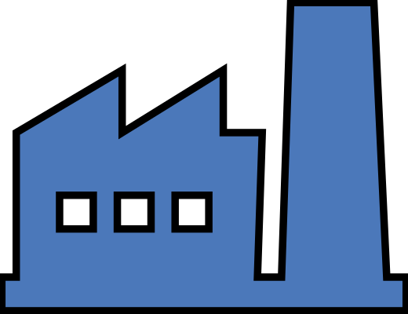
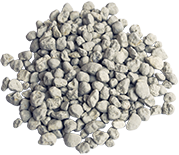

История
|

2003

|
Основание компании
Наше производство развернуто в городе Богданович вердловской области, а первый офис начал действовать
в Екатеринбурге. В 2009 году в результате роста спроса на продукцию НПК орбент модернизировала
производственные мощности и увеличила объемы выпуска
|
|
2009
|
Модернизация производства
Наше производство развернуто в городе Богданович вердловской области, а первый офис начал действовать
в Екатеринбурге. В 2009 году в результате роста спроса на продукцию НПК орбент модернизировала
производственные мощности и увеличила объемы выпуска
|
|
2014
|
Открытие Московского офиса
Наше производство развернуто в городе Богданович вердловской области, а первый офис начал действовать
в Екатеринбурге. В 2009 году в результате роста спроса на продукцию НПК орбент модернизировала
производственные мощности и увеличила объемы выпуска
|
|
2016
|
Начало международной деятельности
Наше производство развернуто в городе Богданович вердловской области, а первый офис начал действовать
в Екатеринбурге. В 2009 году в результате роста спроса на продукцию НПК орбент модернизировала
производственные мощности и увеличила объемы выпуска
|

Опока

Диатомит

Силикагель

Древесные Гранулы
|
Наша продукция
Основными продуктами компании являются сорбенты на основе
опал кристаболитовых пород опоки и диатомита.
Мы также предлагаем силикагель и древесные гранулы-пелеты. Основными продуктами компании являются сорбенты на основе опал кристаболитовых пород опоки и диатомита. Основными продуктами компании являются сорбенты на основе опал кристаболитовых пород опоки и диатомита. |
|
Применение
Опока и диатомит применяются, как экологические наполнители для кошачьих туалетов, промышленные и химические сорбенты, минеральные добавки к кормам животных и птиц, а также в качестве кондиционеров для почвы.
Силикагель находит свое применение в качестве гигиенических наполнителей для туалетов домашних животных. Древесные гранулы-пелеты используются в качестве топлива и для ухода за питомцами. |
|
Производство и доставка

|
В настоящий момент НПК Сорбент один из лидеров
рынка минеральных и химических сорбентов России.
Мы обладаем мощной производственной базой которая находится в непосредственной близости от важных железнодорожных и автомобильных развязок. |
Миссия
Мы производим сорбенты
самого высокого качества
и сопровождаем поставки
наилучшим сервисом, что бы
мир был чище, здоровее
и зеленее!
Цели
Мы хотим, чтобы нас ценили
за качество и рекомендовали
нашу продукцию. Мы должны
быть предприятием, с которым
выгодно и удобно работать.
Мы стремимся к тому, чтобы
НПК Сорбент вызывал доверие
и воспринимался, как надежный
поставщик.
 Ценности:
Ценности:
- Фокус на потребителя
- Честные отношения с партнерами
- Забота об экологии
- Научный подход
- Постоянное развитие
- Честные отношения с партнерами
- Забота об экологии
- Научный подход
- Постоянное развитие
Виденье
НПК Сорбент видит себя
компанией полного
производственного цикла,
поставляющей экологичесую
продукцию собственного
производства на российский
и международные рынки.